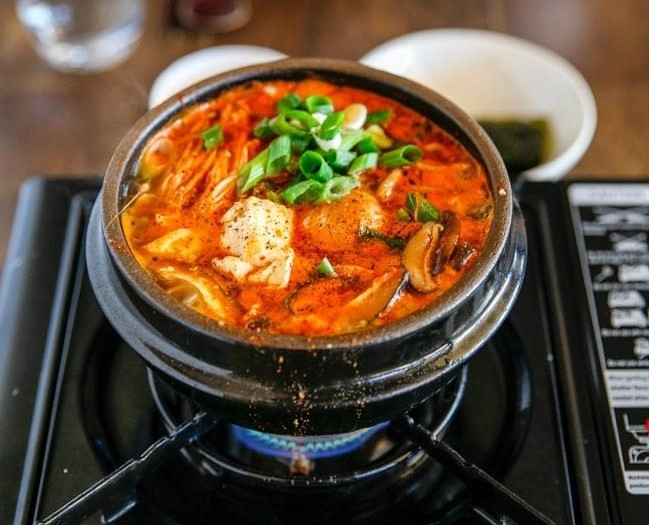

Sundubu Jjigae (Korean Spicy Soft Tofu Stew)
Ingredients
MAIN
- 350 g Korean soft tofu (12 ounces)
- 110 g littleneck clams (3.9 ounces), cleaned
- 3 banana prawns (80g / 2.8 ounces), head, shells and guts removed
- 100 g enoki mushrooms (3.5 ounces), bottom 4-5 cm stem removed and rinsed briefly in cold running water
- 45 g oyster mushrooms or shimeji mushrooms (1.6 ounces), rinsed and separated by hand
- 2 shiitake mushrooms (20g / 0.7 ounces), cleaned, stem removed and thinly sliced
- 1 egg optional
- 1 stalk green onion (10g /0.4 ounces), diagonally thinly sliced
Soup base
- 355 ml Dried kelp and dried anchovy stock (12 fluid ounces)
- 1 Tbsp cooking oil I used rice bran oil
- 1 Tbsp Korean chili flakes (gochugaru)
- 1 tsp minced garlic
- 1/2 tsp soy sauce
- 1/4 tsp fine sea salt (or more to taste)
- A few sprinkles ground black pepper
- A dash sesame oil about 1 tsp
Directions
- Put the cooking oil, chilli powder, garlic and soy sauce into a pot. Heat the pot on the stove on medium heat and stir the spices well for 1 min. Make sure not to burn the chilli powder.
- Add the clams and shrimps and stir quickly to coat them with the chilli sauce.
- Add the dried kelp and anchovy stock and boil it on medium to medium-high heat until it starts to boil rapidly (2 to 3 mins). Add the salt and stir.
- Add the tofu, in big chunks, mushrooms, and egg and cook them for another 1 to 2 mins.
- Top up with the green onion, black pepper and sesame oil. Serve hot with Korean steamed rice and side dishes (banchan).
Go Back!